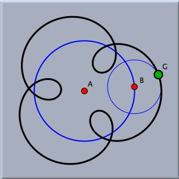
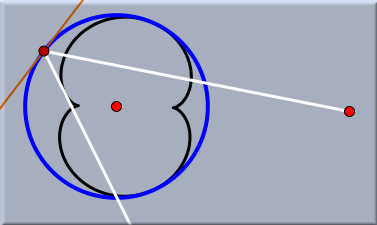
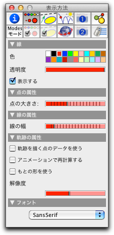
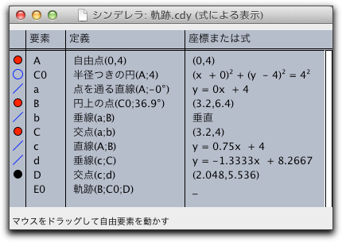
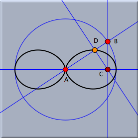
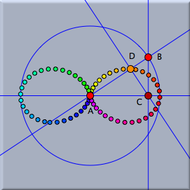

軌跡
軌跡を描く

- 動かす点とは、直線や円の上を自由に動くことのできる自由点です。
- 動かす道とは、動かす点が動くことのできる直線や円のことをいいます。 動かす点はその道の上を動きます。
- 軌跡を描く点とは、動かす点が動かす道の上をくまなく動いた時に、計算の結果軌跡を描く点のことです。
動かす点、動かす道、軌跡を描く点の順番でクリックして要素を指定することになります。 しかし、もし自由要素の中でも制約のある場合、つまり「直線の上を自由に動く点」 「円の上を自由に動く点」「定点を通る直線」を指定するとシンデレラは動かす道が1つしかないと 認識して自動的に選択します。 (訳者中：この時、特に注意しなければならないのは、「定点を通る直線」の場合、動かす点とは 動かす直線のことを意味し、動かす道とは定点のことを意味する、ということです。原文では 「動かす点= mover」「動かす道 = road」ですが、この訳がよりわかりやすいと思いました)． 最下段のメッセージに注意して、順番に要素を指定してください．
- 「動かす点」= 直線上の自由点、「動かす道」=直線: 点が直線の上をくまなく動きます。
- 「動かす点」= 円上の自由点、「動かす道」= 円: 点が円の上をくまなく動きます。
- 「動かす点」= 線分上の自由点、「動かす道」=線分: 点が線分の上をくまなく動きます。
- 「動かす点」= 円弧上の自由点、「動かす道」=円弧: 点が円弧の上をくまなく動きます。
- 「動かす点」= 定点を通る直線、「動かす道」 = 点: 定点を通るすべての直線について考えます。
 |
| トロコイド曲線 |
(訳註：このトロコイドを作図するのには数学の 知識とちょっとした作図の裏技が必要です。最初からトロコイドを描く専用のモードがあるわけではないことを注意しておきます。また、これを試行錯誤で描くことはとても難しいでしょう。)
シンデレラでは、軌跡を描く点として、特別に直線を選択することもできます。 この場合には、包絡線が描かれます。
 |
| 円形の鏡の内部における光線の包絡線 |
(訳註：この包絡線の絵を書くのにも数学の知識とちょっとした裏技が必要です。)
また、要素の軌跡は代数曲線の実平面上の枝であると言うことができます。 シンデレラではその枝全体を画面上に描くように組まれています。 (訳註：枝というのは数学用語で、複数個の値をとる計算においてその値の1つ1つを枝と呼びます。)
軌跡とインスペクタ
シンデレラ1.4に比べ、シンデレラ2での軌跡モードはずっと柔軟で強力になりました。新しい機能のほとんどは インスペクタからアクセスできます。ここでは、どんなことができるか、簡単に説明します。より詳しい説明については、 例題? を参照してください。
インスペクタの表示タブを開くと、次のようなウィンドウになります。
 |
| 軌跡の表示インスペクタ |
通常、軌跡は線で描かれますので、色と、表示/非表示、線の幅だけが関係します。
しかし、 シンデレラ２ では、軌跡を描く要素の標本をスナップショットとして表示することができます。この場合、点の軌跡は点列として描かれます。そのため、点の外観も関係してきます。軌跡の表示は、インスペクタの下方の「軌跡の属性」で設定されます。３つのチェックボックスは次のような意味です。
- もとの形を使う: このボックスがチェックされていると、線の代わりにもとの図形が足跡として描かれます。
- 軌跡を描く点のデータを使う: このボックスがチェックされていると、軌跡を描く点のデータがそのまま使われます。特に、外観はそのまま保たれます。
- アニメーションで再計算する: このボックスがチェックされていると、アニメーションをしながら、実際のデータと動かす点の位置で軌跡は常に更新されます。
解像度スライダーは、軌跡の標本点の数をコントロールします。
新しい軌跡の特徴をすこしでも理解するために、次の図を見てください。
 |
| 式による表示 |
次の２つの図は、同じ軌跡を異なる方法で表示したものです。
 |  |
|
| 単純な表示 | 色をつけた表示 |
左側が単純な表示です。次の行
D.color=hue(B.angle/pi/2)
を CindyScript のパネルに書くと、軌跡を描く点は、動かす点の角度によって色を変えます。それから、「もとの形を使う」と「軌跡を描く点のデータを使う」をチェックしたのが右の図です。このようにすれば、軌跡の８の字がどのように描かれるかがよくわかるでしょう。
要約
動く点、動かす道、軌跡を描く点を指定することにより、軌跡(または包絡線)を描くことができる．注意
軌跡を計算させる時に、画面が一時的に止まってしまう ことがあります。 しかしこれはコンピュータの性能が悪いとか、シンデレラにプログラムミスがあるとか、シンデレラの作者が悪いとか、ということではありません． 正しい軌跡をすべての場合にわたって描くことは困難を伴うものであり、シンデレラでは万全を期すために、時間はかかりますが綿密な計算を繰り返しているのです。 プログラム作者としては、できる限り早く軌跡を表示できるアルゴリズムを使っていますが、それでも限度があるので、了承してください． 数学的な厳密さを犠牲にしたくないのです。こちらも参照してください
(阿原)
Page last modified on Thursday 23 of February, 2012 [07:40:45 UTC].
The original document is available at
http://doc.cinderella.de/tiki-index.php?page=LocusJ